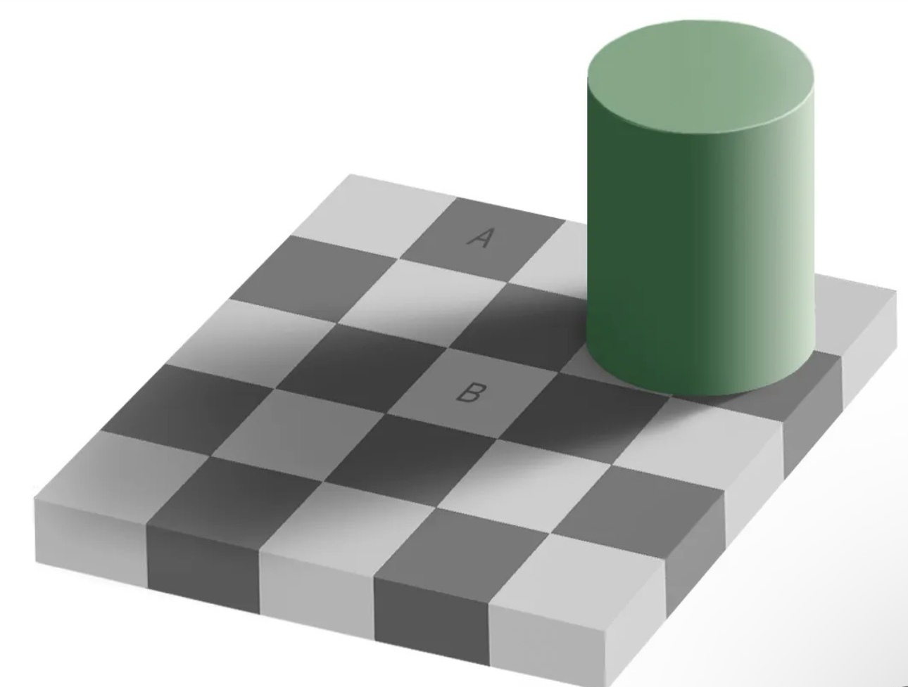
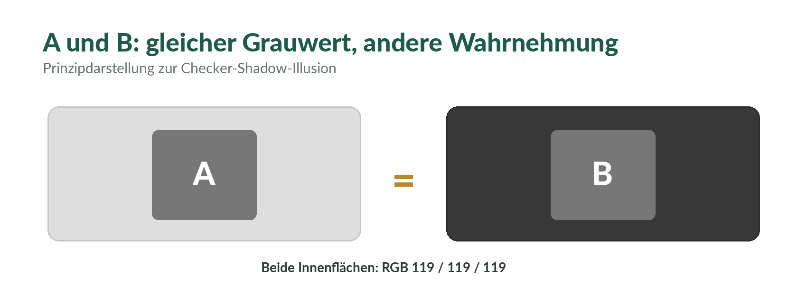
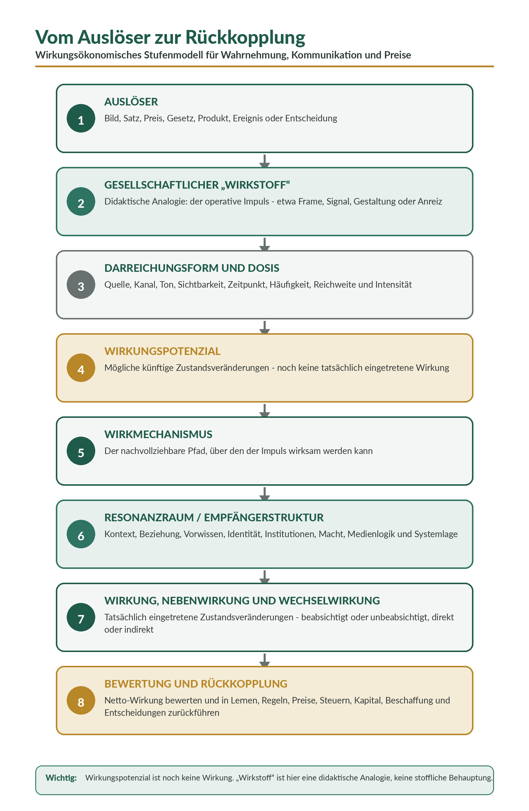
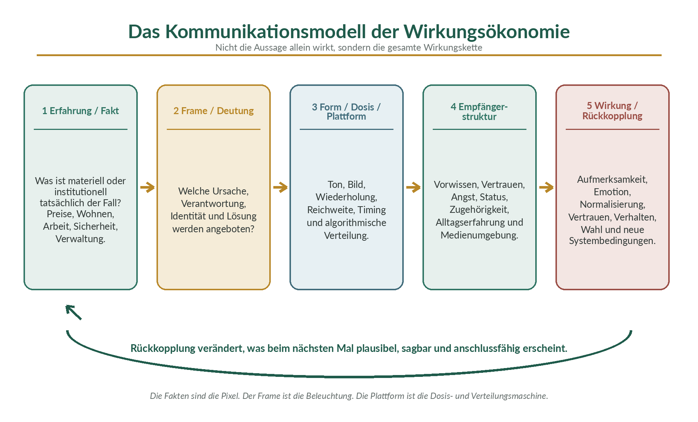
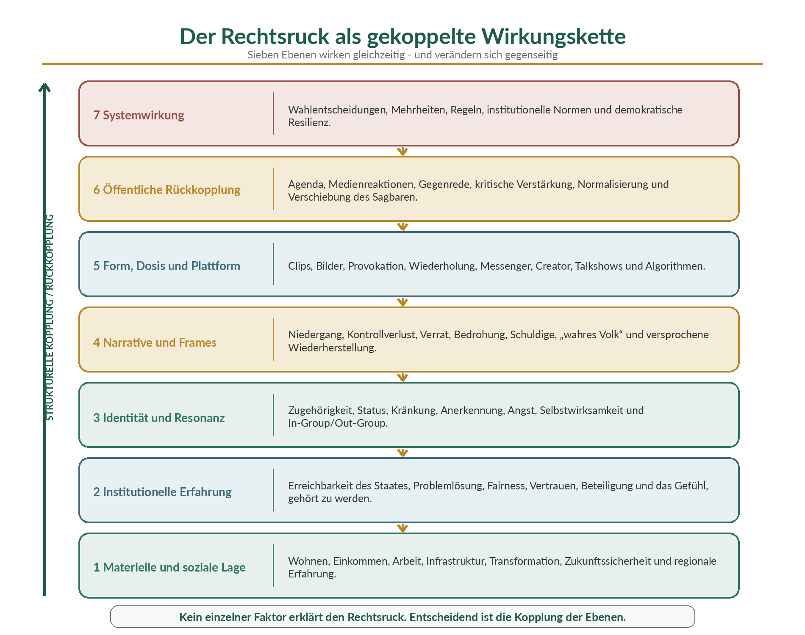
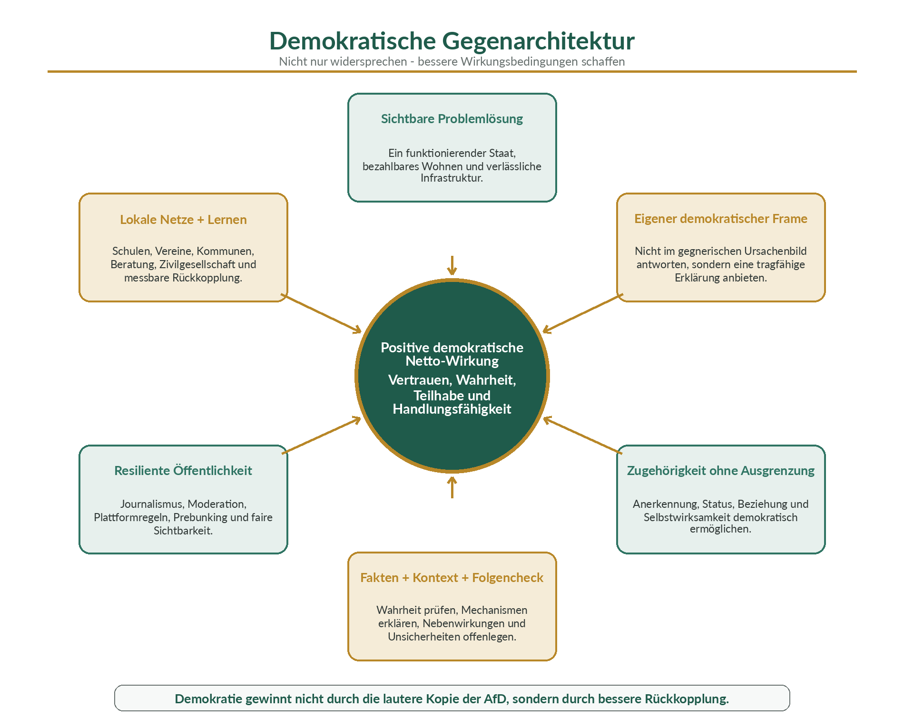

Weiterführend: Die Übersicht zum Öffentlichen Wirkungsraum, der Wirkungsradar und das Glossar zu Wirkungspotenzial ergänzen diese Langform.
1. A und B sind gleich grau - und trotzdem sehen wir einen Unterschied
Schauen wir zunächst nur auf das Schachbrett. Feld A wirkt dunkel. Feld B wirkt deutlich heller. Die spontane Wahrnehmung ist so eindeutig, dass der Hinweis auf identische Grauwerte beinahe wie ein Taschenspielertrick klingt. In Edward H. Adelsons Originalkonstruktion besitzen A und B jedoch dieselbe physikalische Helligkeit. Der Unterschied entsteht nicht in den beiden Flächen, sondern in der Verarbeitung der gesamten Szene: Nachbarfelder, räumliche Perspektive, Zylinder und Schatten werden gemeinsam ausgewertet (Adelson 1995).

1.1 Das Auge misst Licht - aber wir erleben Oberflächen
Auf der Netzhaut landet keine fertige Information mit den Etiketten „Materialfarbe“ und „Beleuchtung“. Vereinfacht lässt sich der ankommende Lichtreiz als Produkt zweier Größen beschreiben:
Vereinfachte Beziehung: Lichtreiz ≈ Oberflächenreflexion × Beleuchtung.
Das visuelle System erhält also nur das Ergebnis der Multiplikation. Es muss erschließen, welcher Anteil vermutlich von der Oberfläche und welcher von der Beleuchtung stammt. Eine graue Fläche im hellen Sonnenlicht kann mehr Licht zum Auge schicken als eine weiße Fläche im Schatten. Trotzdem soll das weiße Blatt als weiß erkennbar bleiben. Das Gehirn versucht deshalb, Beleuchtungseinflüsse herauszurechnen. Diese Leistung wird als Helligkeits- beziehungsweise Farbkonstanz beschrieben.
Bei Feld B erkennt das Wahrnehmungssystem eine plausible Schattenlage. Es „weiß“ aus unzähligen Erfahrungen, dass eine Oberfläche im Schatten weniger Licht reflektiert, ohne deshalb aus dunklerem Material zu bestehen. Deshalb kompensiert es den Schatten und ordnet B als helles Feld ein. Bei A fehlt diese Kompensation. Gleichzeitig verstärken die benachbarten Felder den lokalen Kontrast. Aus denselben Pixelwerten entsteht dadurch eine andere erlebte Helligkeit.
Das ist kein bloßer Fehler. Im Alltag ist es eine enorme Kompetenz. Ohne diese Korrektur würden Gegenstände bei jeder Wolke, jeder Lampe und jeder Tageszeit scheinbar ihre Farbe wechseln. Die Illusion ist die Nebenwirkung eines Systems, das normalerweise sehr zuverlässig zwischen Oberfläche und Beleuchtung unterscheidet.

Merksatz: Die Wahrnehmung liest nicht einfach einen Wert ab. Sie löst ein Kontextproblem.
1.2 #TheDress: Wenn das Gehirn über die Beleuchtung entscheiden muss
Beim berühmten Foto von #TheDress ist der Konflikt noch deutlicher. Manche Menschen sehen ein weiß-goldenes Kleid, andere ein blau-schwarzes, wieder andere eine Mischform. Das physische Kleid war blau und schwarz. Das Foto selbst enthält jedoch uneindeutige Hinweise auf die Lichtquelle: Es ist stark überbelichtet, der Hintergrund ist sehr hell und die spektrale Zusammensetzung der Beleuchtung bleibt unklar.
Das visuelle System muss deshalb eine Hypothese bilden. Wer annimmt, das Kleid stehe in kühlem, bläulichem Schatten, zieht gedanklich Blau ab und erlebt eher Weiß und Gold. Wer warmes, gelbliches Licht annimmt, kompensiert dieses Licht und erlebt eher Blau und Schwarz. In einer großen Untersuchung mit 1.401 Personen berichteten 57 Prozent blau-schwarz, 30 Prozent weiß-gold, 11 Prozent blau-braun und 2 Prozent andere Kombinationen. Die Autoren führen die Unterschiede auf verschiedene Annahmen über die Beleuchtung zurück (Lafer-Sousa, Hermann & Conway 2015).
Die entscheidende Beobachtung lautet nicht: „Jeder sieht eben seine eigene Wahrheit.“ Entscheidend ist: Derselbe physikalische Reiz zwingt das Wahrnehmungssystem nicht zu nur einer Deutung, wenn der Kontext mehrere plausible Modelle zulässt. Die Außenwelt begrenzt die Möglichkeiten. Welche dieser Möglichkeiten als Wahrnehmung hervorgebracht wird, hängt aber auch von der Struktur und Erfahrung des Beobachters ab.
Die erste Brücke: Die Pixel sind dieselben. Die angenommene Beleuchtung verändert, was wir in ihnen sehen.
2. Wahrnehmung ist keine Kamera - sie ist eine arbeitsfähige Hypothese
Die Vorstellung, Wahrnehmung funktioniere wie eine Kamera, ist verführerisch: Draußen befindet sich ein Objekt, das Auge nimmt es auf, das Gehirn zeigt eine innere Kopie. Schachbrett und Kleid zeigen, warum dieses Modell zu einfach ist. Ein Nervensystem muss aus unvollständigen, mehrdeutigen und rauschenden Signalen eine handlungsfähige Welt hervorbringen. Es ergänzt, gewichtet, vergleicht und stabilisiert.
Diese Rekonstruktion geschieht nicht erst nach einer angeblich neutralen Wahrnehmung. Sie ist Teil der Wahrnehmung selbst. Wir erleben nicht zuerst rohe Lichtwerte und entscheiden anschließend bewusst, ob Schatten vorliegt. Wir erleben unmittelbar eine helle oder dunkle Fläche, ein weißes oder blaues Kleid. Die „Korrektur“ ist bereits in dem enthalten, was uns als selbstverständlich erscheint.
2.1 Drei Ebenen, die nicht verwechselt werden dürfen
Für die weitere Übertragung ist eine saubere Trennung wichtig:
- Der messbare Reiz: Lichtwerte, Spektren, Pixel, Schallwellen oder andere beobachtbare Signale.
- Die systemische Verarbeitung: Vergleich, Kontextbildung, Erinnerung, Erwartung und körperliche beziehungsweise neuronale Struktur.
- Das Erleben und Handeln: wahrgenommene Farbe, Bedeutung, Emotion, Entscheidung oder Verhalten.
Zwischen diesen Ebenen gibt es Zusammenhänge, aber keine einfache Gleichsetzung. Aus einem gleichen lokalen Reiz kann in verschiedenen Kontexten ein anderes Erleben entstehen. Umgekehrt kann ein stabiler Gegenstand trotz wechselnder Reize als derselbe erkannt werden. Die Wahrnehmung ist deshalb weder eine freie Erfindung noch eine passive Kopie. Sie ist eine durch Welt und System gemeinsam begrenzte Hervorbringung.
2.2 Kontext ist nicht Dekoration, sondern Teil des Signals
Beim Schachbrett könnte man meinen, Schatten und Nachbarfelder seien bloßer Hintergrund. Tatsächlich sind sie für das visuelle System entscheidende Information. Kontext sagt, wie ein Reiz zu deuten ist. Das gilt auch außerhalb des Sehens. Ein Satz erhält eine andere Bedeutung, wenn er ironisch, drohend oder fürsorglich gesprochen wird. Eine Zahl erhält eine andere Bedeutung, wenn sie als Jahreswert, Durchschnitt, Gesamtsumme oder Anteil präsentiert wird. Ein Preis erhält eine andere Bedeutung, wenn Folgekosten, Lebensdauer und Risiken bekannt oder verborgen sind.
Die Wirkung eines Elements lässt sich deshalb nicht zuverlässig aus dem Element allein ableiten. A und B können nicht verstanden werden, indem man nur zwei isolierte Quadrate beschreibt. Man muss das Muster untersuchen. Genau hier beginnt die Verbindung zur Kommunikationspsychologie und zur Wirkungsökonomie.
Zentrale Unterscheidung: Der Reiz ist nicht die Wahrnehmung. Die Aussage ist nicht die Bedeutung. Der Preis ist nicht die gesamte Wirkung.
3. Maturana: Ein äußerer Reiz löst aus - aber er schreibt die Reaktion nicht vor
Humberto Maturanas Begriff der Strukturdeterminiertheit liefert für diese Beobachtung einen besonders starken Rahmen. Ein strukturdeterminiertes System verändert sich gemäß seiner aktuellen Struktur. Ein äußerer Einfluss kann eine Veränderung anstoßen, aber er spezifiziert nicht von außen, welche interne Veränderung entstehen muss. Maturana spricht deshalb von einer Störung oder Perturbation: Die Umwelt löst aus; das System bestimmt aus seiner Struktur heraus, was geschieht (Maturana 2002; Maturana & Varela 1987).
Auf das Schachbrett übertragen: Die Lichtverteilung trifft auf das visuelle System. Sie trägt nicht als fertige Botschaft in sich: „B ist heller als A.“ Sie stößt neuronale Prozesse an, in denen Kontrast, Schatten, räumliche Ordnung und Erfahrung zusammenwirken. Die erlebte Helligkeit entsteht im System. Adelsons Wahrnehmungsforschung erklärt den konkreten Mechanismus über Helligkeitskonstanz und Kontext; Maturana liefert den erkenntnis- und systemtheoretischen Rahmen dafür, warum Wahrnehmen grundsätzlich nicht mit Abbilden gleichgesetzt werden darf.
3.1 Strukturdeterminiert bedeutet nicht: von außen unberührbar
Der Begriff wird leicht missverstanden. Strukturdeterminiertheit heißt nicht, dass Umwelt unwichtig wäre oder ein System beliebig reagieren könne. Ohne den konkreten Reiz gäbe es diese konkrete Veränderung nicht. Aber die Umwelt ist Auslöser, nicht Bauplan der Reaktion. Welche Veränderungen überhaupt möglich sind, wird durch die Organisation und den jeweiligen Zustand des Systems begrenzt.
Ein einfaches Bild: Derselbe Druck auf eine Türklingel, eine Klaviertaste und einen Lichtschalter führt zu völlig verschiedenen Ergebnissen. Der Finger liefert jeweils einen Impuls. Das Ergebnis wird durch die Struktur des jeweiligen Systems bestimmt. Bei lebenden und sozialen Systemen ist die Struktur allerdings dynamisch, historisch gewachsen und vielfach rückgekoppelt.
3.2 Strukturelle Kopplung: Warum Erfahrung die spätere Wirkung verändert
Maturana bezeichnet die Geschichte wiederkehrender, aufeinander bezogener Veränderungen von System und Umwelt als strukturelle Kopplung. Das visuelle System ist über Evolution, Entwicklung und Alltagserfahrung an eine Welt gekoppelt, in der Schatten und wechselnde Beleuchtung normal sind. Darum kompensiert es Beleuchtung. Kommunikation verändert ebenfalls die Struktur, auf die spätere Kommunikation trifft: Begriffe werden vertraut, Erwartungen entstehen, Vertrauen wächst oder sinkt, Grenzen des Sagbaren verschieben sich.
Damit kommt Zeit in das Wirkungsmodell. Eine Aussage wirkt nicht nur im Moment ihrer Äußerung. Sie kann die Bedingungen verändern, unter denen die nächste Aussage verstanden wird. Die erste Wiederholung eines Begriffs erzeugt vielleicht Irritation, die fünfzigste Vertrautheit. Eine politische Formel kann zunächst als extrem gelten, später als normale Kategorie. Eine Preisänderung kann kurzfristig Nachfrage verschieben und langfristig Investitionen, Infrastruktur und Gewohnheiten umbauen.
3.3 Kommunikation ist keine Paketübertragung von Bedeutung
Im Alltagsmodell sendet Person A eine Information, Person B empfängt dieselbe Information und sollte folglich dasselbe verstehen. Maturanas Ansatz widerspricht dieser Paketmetapher. Laute, Zeichen und Gesten können Verhalten koordinieren, aber Bedeutung wird nicht wie ein Gegenstand von einem Kopf in den anderen transportiert. Die Äußerung trifft auf einen strukturierten Beobachter und löst dort eine eigene Zustandsveränderung aus.
Das erklärt, warum ein Satz bei einer Person Trost, bei einer anderen Bevormundung und bei einer dritten gar nichts auslösen kann. Der Sender kontrolliert die Wirkung nicht vollständig. Er beeinflusst jedoch den Auslöser, die Form, die Dosis, den Zeitpunkt, den Kontext und damit das Wirkungspotenzial. Gerade deshalb bleibt kommunikative Verantwortung bestehen.
Maturana in einem Satz: Ein Impuls bestimmt nicht seine Wirkung; er trifft auf ein strukturdeterminiertes System, das gemäß seiner eigenen Struktur reagiert.
3.4 Beobachterabhängigkeit ist kein Freibrief für Beliebigkeit
Aus Maturana folgt kein „Alles ist nur Ansicht“. Beim Schachbrett können die Pixel gemessen werden. Beim Kleid kann das physische Gewebe untersucht werden. Aussagen können wahr oder falsch sein. Emissionen, Krankheiten, Arbeitszeiten und Überschwemmungsschäden existieren nicht bloß als Meinung. Beobachterabhängigkeit bedeutet vielmehr, dass wir auf Wirklichkeit nur durch Unterscheidungen, Messverfahren, Begriffe und Systemstrukturen zugreifen.
Die sachliche Konsequenz ist deshalb nicht Relativismus, sondern methodische Demut: Wir müssen offenlegen, was gemessen wird, welche Grenzen gesetzt werden, welche Kontexte fehlen und welche alternativen Deutungen oder Wirkmechanismen möglich sind. Objektivität entsteht nicht dadurch, dass der Beobachter unsichtbar gemacht wird, sondern dadurch, dass Beobachtung nachvollziehbar, überprüfbar und korrigierbar organisiert wird.
4. Von der Wahrnehmung zur Kommunikation: Der Frame ist die Beleuchtung
Beim Kleid fragt das Gehirn unbewusst: Unter welchem Licht steht dieses Objekt? In der Kommunikation stellt es vergleichbare Fragen: Von wem kommt diese Aussage? In welcher Beziehung stehen wir? Was ist gemeint? Was wurde vorher gesagt? Welche Absicht vermute ich? Welche Erfahrung und Identität bringe ich mit?
Daraus entsteht eine nützliche, aber bewusst vereinfachte Metapher:
Die Fakten sind die Pixel. Der Frame ist die Beleuchtung. Die Empfängerstruktur entscheidet mit, welche Bedeutung und Wirkung daraus entstehen.
Ein Frame hebt bestimmte Aspekte hervor und lässt andere in den Hintergrund treten. „Klimaschutz kostet Milliarden“ beleuchtet Ausgaben und Belastung. „Klimaschutz verhindert Milliardenschäden“ beleuchtet vermiedene Verluste. „Klimaschutz modernisiert Infrastruktur“ beleuchtet Investition und Fähigkeit. Keine Formulierung ist schon allein deshalb wahr oder falsch. Aber jede ordnet die Aufmerksamkeit anders, aktiviert andere Vergleichsmaßstäbe und eröffnet andere Handlungsmöglichkeiten. Die Forschung zu Framing zeigt seit langem, dass formal gleichwertige Informationen je nach Darstellung anders bewertet werden können (Tversky & Kahneman 1981).
4.1 Confirmation Bias: Ein wichtiger Mechanismus - aber nicht das ganze Modell
Der Bestätigungsfehler beschreibt die Tendenz, Informationen bevorzugt zu suchen, zu erinnern und zu gewichten, die vorhandene Überzeugungen stützen. Widersprechende Hinweise werden strenger geprüft, leichter abgewertet oder weniger gut erinnert. Das kann erklären, warum zwei Menschen dieselbe Statistik als Bestätigung gegensätzlicher Weltbilder lesen (Nickerson 1998).
Der Confirmation Bias ist jedoch nur ein Mechanismus innerhalb eines größeren Zusammenhangs. Bereits bevor eine Aussage bewusst geprüft wird, wirken Quelle, Ton, Gruppenzugehörigkeit, Emotion und Deutungsrahmen. Maturanas Strukturdeterminiertheit liegt eine Ebene tiefer: Nicht erst die Bewertung einer fertig verstandenen Information, sondern schon Wahrnehmen, Verstehen und Unterscheiden sind strukturabhängig.
4.2 Motiviertes Denken und Identität
Menschen prüfen Behauptungen nicht immer nach einem einheitlichen Beweismaßstab. Erwünschte Schlussfolgerungen werden mit weniger Widerstand akzeptiert; unerwünschte müssen oft wesentlich höhere Hürden überwinden. Kunda beschreibt dies als motiviertes Denken: Das gewünschte Ergebnis beeinflusst die Auswahl und Bewertung von Gründen, ohne dass die Person zwingend bewusst täuscht (Kunda 1990).
Besonders stark wird dieser Mechanismus, wenn eine Information nicht nur eine Sachmeinung, sondern die Zugehörigkeit zu einer Gruppe, das eigene Selbstbild oder moralische Identität berührt. Dann kann ein Faktenhinweis als Angriff auf die Person oder Gemeinschaft erlebt werden. Die Frage lautet nicht mehr nur „Stimmt das?“, sondern auch „Was würde es über mich und meine Gruppe sagen, wenn es stimmt?“
4.3 Quelle, Beziehung und Vertrauen
Der Satz „Darüber sollten wir noch einmal nachdenken“ kann fürsorglich, arrogant, drohend oder konstruktiv wirken. Der Wortlaut bleibt gleich; die Beziehung verändert die Bedeutung. Vertrauen fungiert wie ein Interpretationsfilter. Einer vertrauten Quelle wird eher eine wohlwollende Absicht zugeschrieben. Einer misstrauten Quelle wird selbst eine korrekte Information als Manipulationsversuch ausgelegt.
Damit wird Vertrauen selbst zu einem Wirkungskapital, das über lange Zeit aufgebaut und in einem Moment verspielt werden kann. Kommunikation produziert nicht nur Sachwissen. Sie verändert auch die Bedingungen zukünftiger Verständigung.
4.4 Dosis, Wiederholung und Agenda
In der Wirkstoffmetapher ist die Dosis keine Nebensache. Eine Aussage, die einmal im kleinen Kreis fällt, hat ein anderes Wirkungspotenzial als dieselbe Aussage in einer reichweitenstarken Sendung, als Schlagzeile, Meme oder algorithmisch verstärkte Wiederholung. Wiederholung erhöht Vertrautheit; Vertrautheit kann wiederum die subjektive Glaubwürdigkeit steigern, selbst wenn der Inhalt nicht besser belegt ist. Dieser sogenannte Illusory-Truth-Effekt ist seit den 1970er-Jahren gut dokumentiert (Hasher, Goldstein & Toppino 1977).
Auch die Auswahl der Themen wirkt. Agenda-Setting-Forschung zeigt, dass Medien nicht einfach festlegen, was Menschen denken, aber wesentlich mitbestimmen können, worüber sie nachdenken und was als dringlich gilt (McCombs & Shaw 1972). Eine Faktenprüfung kann deshalb unbeabsichtigt die Sichtbarkeit einer Behauptung erhöhen. Das bedeutet nicht, dass Falsches unkommentiert bleiben soll. Es bedeutet, dass Form, Häufigkeit, Kontext und Korrekturstrategie Teil der Wirkungsanalyse sein müssen.
4.5 Reaktanz, Nebenwirkung und fortwirkende Fehlinformation
Wer sich in seiner Freiheit bedroht fühlt, kann mit Reaktanz reagieren: Die Botschaft wird gerade deshalb abgelehnt, weil sie als Druck oder Bevormundung erlebt wird. Reaktanz hängt nicht nur vom Inhalt ab, sondern von Ton, Beziehung, Wahlmöglichkeiten und Identität (Steindl et al. 2015).
Zudem können widerlegte Informationen weiterwirken. Menschen erinnern später den Kern einer Erzählung, aber nicht immer die Korrektur oder Quellenbewertung. Die Forschung spricht vom Continued-Influence-Effekt. Gute Korrekturen sollten deshalb nicht nur „falsch“ sagen, sondern eine verständliche alternative Erklärung anbieten und die Lücke im mentalen Modell schließen (Lewandowsky et al. 2012).
Kommunikative Wirkung: Eine Aussage kann gleichzeitig wahr sein, schlecht gerahmt werden, bei verschiedenen Gruppen gegensätzlich wirken und langfristig den Resonanzraum verändern.
5. Das wirkungsökonomische Stufenmodell: vom Auslöser zur Rückkopplung
Aus Wahrnehmungspsychologie, Maturana und Kommunikationsforschung lässt sich ein gemeinsames Modell ableiten. Es verhindert vor allem drei Verwechslungen: Auslöser ist nicht Wirkung. Wirkungspotenzial ist nicht eingetretene Wirkung. Gute Absicht ist kein Wirkungsnachweis.

5.1 Auslöser
Ein Auslöser kann ein Bild, ein Satz, ein Preis, ein Gesetz, ein Produkt, eine technische Funktion, ein Naturereignis oder eine Entscheidung sein. Er ist zunächst das, was auf ein System trifft. Ein Auslöser besitzt Eigenschaften, aber noch keine unabhängig vom Empfänger feststehende gesellschaftliche Wirkung.
5.2 Gesellschaftlicher „Wirkstoff“ - ausdrücklich als Analogie
Der Begriff „Wirkstoff“ ist in der Wirkungsökonomie eine didaktische Analogie. Gemeint ist der operative Anteil eines Auslösers, der Veränderung anstoßen kann: bei einer Aussage etwa Frame, Begriff, Bild, Erzählung oder Autorität; bei einem Preis der Anreiz; bei einem Produkt Funktion, Material und Gestaltung; bei einem Gesetz Gebot, Verbot, Haftung oder Anspruch. Der Begriff behauptet keine stoffliche Identität mit Medizin oder Chemie.
Die Analogie ist nützlich, weil sie Inhalt und Wirkung trennt. Ein Wirkstoff (didaktische Analogie) kann vorhanden sein, ohne bei jeder Person dieselbe Wirkung zu erzeugen. Er kann je nach Dosis, Umgebung und Wechselwirkung nützen, schaden oder wirkungslos bleiben. Genau diese Trennung fehlt oft in politischen und wirtschaftlichen Debatten.
5.3 Darreichungsform und Dosis
Form und Dosis entscheiden darüber, ob und wie ein Wirkungspotenzial aktiviert wird. In Kommunikation gehören dazu Quelle, Kanal, Ton, Zeitpunkt, Häufigkeit, Reichweite, Visualisierung und Wiederholung. Bei Preisen sind es absolute Höhe, relative Differenz, Sichtbarkeit, Zeitpunkt, Laufzeit und Verlässlichkeit. Bei Regeln zählen Kontrollwahrscheinlichkeit, Sanktion, Verständlichkeit und Umsetzbarkeit.
Die gleiche inhaltliche Aussage kann als nüchterne Statistik, persönliche Geschichte, empörende Schlagzeile oder satirischer Clip völlig andere Wirkpfade eröffnen. Der gleiche Preisunterschied kann bei einem Alltagsprodukt sofort wirken, bei einer langlebigen Investition aber gegenüber Finanzierung, Gewohnheit und Infrastruktur verblassen.
5.4 Wirkungspotenzial
Wirkungspotenzial bezeichnet mögliche künftige Zustandsveränderungen. Es ist weder bloße Absicht noch bereits eingetretene Wirkung. Eine Aussage kann das Potenzial haben, aufzuklären, Angst zu erzeugen oder zu normalisieren. Ob das tatsächlich geschieht, hängt von Mechanismus, Empfängerstruktur, Kontext und Zeit ab. Diese begriffliche Disziplin ist zentral: Wer ein Potenzial wie einen bewiesenen Effekt behandelt, überschätzt seine Evidenz; wer Potenziale ignoriert, handelt blind gegenüber Risiken.
5.5 Wirkmechanismus
Ein Wirkmechanismus beschreibt den plausiblen kausalen Pfad. Beim Schachbrett lautet er vereinfacht: erkannter Schatten plus Kontrastumgebung führt zur Kompensation der Beleuchtung und damit zu unterschiedlicher Helligkeitswahrnehmung. In Kommunikation könnte ein Mechanismus lauten: wiederholte Darstellung erhöht Vertrautheit; Vertrautheit erhöht subjektive Plausibilität; höhere Plausibilität verändert Urteil oder Verhalten. In der Ökonomie: ein Preisaufschlag verändert erwartete Kosten; erwartete Kosten verändern Investitionsrechnung; Investitionen verändern Technikbestand und spätere Emissionen.
Ein guter Mechanismus ist mehr als eine Geschichte. Er benennt Zwischenschritte, Bedingungen und mögliche Bruchstellen. Dadurch wird er empirisch prüfbar.
5.6 Resonanzraum und Empfängerstruktur
Wirkung entsteht in einem Resonanzraum: in Beziehungen, Gruppen, Medien, Institutionen, Infrastrukturen, Rechtslagen und Machtverhältnissen. Empfängerstruktur bezeichnet die konkrete Disposition des Systems, auf das der Impuls trifft. Bei Menschen gehören Vorwissen, Emotion, Identität, körperlicher Zustand und Vertrauen dazu. Bei Unternehmen sind es Kapitalstock, Geschäftsmodell, Fähigkeiten, Lieferverträge und Anreizsysteme. Bei Staaten sind es Institutionen, Haushaltsregeln, Verwaltungskapazität und Legitimität.
Das Schachbrett ist deshalb mehr als ein Bild für subjektive Meinung. Es zeigt die Systemregel: Das einzelne Feld wirkt innerhalb eines Musters. In sozialen Systemen ist dieses Muster nicht nur kognitiv, sondern materiell, institutionell und machtgeprägt.
5.7 Tatsächliche Wirkung, Nebenwirkung und Wechselwirkung
Wirkung ist eine tatsächlich eingetretene Zustandsveränderung. Sie muss an einem Wirkungsträger beziehungsweise Wirkungsempfänger beobachtbar oder begründet erschließbar sein. Dazu gehören beabsichtigte und unbeabsichtigte, positive und negative, direkte und indirekte, kurzfristige und langfristige Veränderungen.
Nebenwirkungen sind nicht lediglich kleine Randerscheinungen. Eine Kampagne kann informieren und zugleich Angst verstärken. Eine Subvention kann Innovation beschleunigen und zugleich Mitnahmeeffekte erzeugen. Effizienz kann Ressourcen pro Einheit sparen und durch steigende Nutzung teilweise aufgehoben werden - ein Rebound. Wechselwirkungen entstehen, wenn mehrere Wirkstoffe (als didaktische Analogie), Regeln, Narrative oder Marktanreize zusammenwirken. In komplexen Systemen ist die Hauptwirkung ohne diese Begleitpfade kaum seriös zu bewerten.
5.8 Bewertung und Rückkopplung
Erst nach der Beobachtung folgt die normative Bewertung. Ist die Zustandsveränderung positiv, negativ oder ambivalent - für wen, wann und gemessen an welchem Referenzrahmen? Die Wirkungsökonomie orientiert diese Bewertung an Mensch, Planet und Demokratie sowie an SDGs und einem erweiterten SDG+-Rahmen aus Menschenrechten, staatlichen Schutzaufträgen, europäischen und völkerrechtlichen Zielen und weiteren relevanten Schutzgütern.
Die Bewertung muss anschließend in Rückkopplung übersetzt werden. Sonst bleibt sie Bericht. Rückkopplung bedeutet: Lernen, Gestaltung, Preise, Steuern, Finanzierung, Versicherungsbedingungen, Beschaffung, Haftung, Managementziele und Regulierung werden so verändert, dass positive Netto-Wirkung wahrscheinlicher und schädliche Wirkung weniger attraktiv wird (Weber 2026).
Orientierungsformel: Wirkung(t) = f(Auslöser, Form, Dosis, Mechanismus, Empfängerstruktur, Kontext, Zeit und Rückkopplung). Die Formel ist kein Rechenautomat, sondern eine Erinnerung daran, dass Wirkung relational und dynamisch entsteht.
6. Faktencheck, Folgencheck und Wirkungsnachweis: drei verschiedene Prüfungen
Die Trennung der Stufen führt zu drei Prüfungen, die nicht gegeneinander ausgespielt werden dürfen. Der Faktencheck schützt vor falschen oder irreführenden Behauptungen. Der Folgencheck untersucht ex ante und begleitend, welche Wirkungen unter konkreten Bedingungen plausibel sind. Der Wirkungsnachweis fragt ex post, welche Zustandsveränderungen tatsächlich eingetreten sind und welchen Beitrag der Auslöser dazu geleistet hat.
| Prüfung | Leitfrage | Was wird untersucht? | Typisches Ergebnis |
|---|---|---|---|
| Faktencheck | Ist die Aussage sachlich richtig und vollständig eingeordnet? | Quellen, Begriffe, Zahlenbasis, Zeitraum, Vergleichsmaßstab, Auslassungen und Unsicherheit. | Eine begründete Aussage über Richtigkeit, Falschheit oder fehlenden Kontext. |
| Folgencheck | Was kann die Aussage oder Entscheidung unter konkreten Bedingungen auslösen? | Wirkungspotenziale, Mechanismen, Zielgruppen, Resonanzräume, Dosis, Nebenwirkungen, Wechselwirkungen und zeitliche Ketten. | Ein transparentes Wirkungs- und Risikomodell - noch kein Beweis tatsächlicher Wirkung. |
| Wirkungsnachweis | Welche Zustandsveränderung ist tatsächlich eingetreten? | Indikatoren, Datenqualität, Vorher-Nachher, Vergleichsgruppe oder Gegenfaktum, Attribution beziehungsweise Beitrag, Verteilung und Netto-Wirkung. | Evidenz über eingetretene Wirkung samt Unsicherheit und Grenzen. |
6.1 Der Faktencheck misst den Grauwert
Beim Schachbrett kann ein Messinstrument zeigen, dass A und B denselben Grauwert besitzen. Das ist die Faktenebene. In Kommunikation prüft der Faktencheck Zahlen, Quellen, Definitionen, Zeiträume und logische Schlussfolgerungen. Er fragt auch, ob eine Aussage formal richtig, aber durch Auslassung irreführend ist.
Ohne Faktencheck würde jede Wirkungsanalyse auf Sand gebaut. Eine falsche Behauptung wird nicht dadurch akzeptabel, dass sie angeblich gute Folgen hat. Wahrheit ist kein Luxus, sondern Voraussetzung demokratischer und wissenschaftlicher Lernfähigkeit.
6.2 Der Folgencheck untersucht das Muster
Der Folgencheck fragt nicht nur: „Stimmt der Satz?“, sondern: „Was kann dieser Satz in diesem Resonanzraum, bei dieser Dosis, über diese Mechanismen auslösen?“ Er prüft Zielgruppen, Kontext, mögliche Nebenwirkungen, zeitliche Ketten, Verteilung, Unsicherheit und Rückkopplung. Er ist eine strukturierte Vorausschau, kein Hellsehen und kein Beweis.
Ein Folgencheck kann deshalb mehrere gegensätzliche Potenziale dokumentieren. Eine drastische Warnung kann Menschen mobilisieren, andere überfordern, wieder andere in Abwehr treiben. Seriös ist nicht, eine Wirkung zu behaupten, sondern Bedingungen und Wahrscheinlichkeiten transparent zu machen.
6.3 Der Wirkungsnachweis beobachtet, was tatsächlich geschah
Ob eine Aussage wirklich Einstellungen verändert hat, lässt sich nicht allein aus ihrer Form ableiten. Dafür braucht es Daten: Experimente, Zeitreihen, Befragungen, Verhaltensdaten, Vergleichsgruppen, qualitative Interviews oder andere passende Methoden. Auch dann ist Attribution schwierig, weil viele Ursachen gleichzeitig wirken. Häufig lässt sich der Beitrag eines Impulses plausibel zeigen, ohne eine monokausale Alleinwirkung zu behaupten.
6.4 Beispiel: „Klimaschutz kostet Milliarden“
Nehmen wir den Satz „Klimaschutz kostet Milliarden“. Ein Faktencheck fragt zunächst: Welche Maßnahmen, welcher Zeitraum, welche Brutto- oder Nettokosten, welche öffentlichen und privaten Ausgaben? Werden vermiedene Klimaschäden, Gesundheitskosten, Energieimporte, Innovationserträge und der Wert neuer Infrastruktur berücksichtigt? Welches Alternativszenario dient als Vergleich?
Der Folgencheck betrachtet den Frame. Das Wort „kostet“ kann Klimaschutz als reine Belastung erscheinen lassen, während Nutzen und vermiedene Schäden im Schatten bleiben. Das Wirkungspotenzial könnte sinkende Unterstützung sein. Bei anderen Empfängern kann die Formulierung aber auch berechtigte Fragen nach Verteilung, Effizienz und sozialer Absicherung auslösen. Der Mechanismus muss deshalb gruppen- und kontextspezifisch formuliert werden.
Der Wirkungsnachweis würde anschließend untersuchen, ob und bei wem die Formulierung tatsächlich Einstellungen, Vertrauen oder Wahlhandlungen verändert hat. Erst dort wird aus einem angenommenen Potenzial eine empirisch begründete Wirkungsaussage.
Kernsatz: Der Faktencheck sagt, ob A und B denselben Grauwert haben. Der Folgencheck erklärt, warum sie verschieden erscheinen können und welche Handlungen daraus folgen könnten. Der Wirkungsnachweis zeigt, was tatsächlich geschehen ist.
7. Der Rechtsruck als Wirkungskette - nicht als einzelne Botschaft
Die entscheidende Verschiebung dieses Artikels liegt hier: Das Kommunikationsmodell ist nicht nur eine Brücke zwischen optischer Wahrnehmung und Preisen. Es ist das Leitmodell, mit dem sich politische Verschiebungen untersuchen lassen. Der Rechtsruck ist kein einzelner Kommunikationsakt und keine lineare Reaktion auf einen einzelnen Missstand. Er entsteht, wenn materielle Erfahrungen, institutionelle Enttäuschungen, Identität, Deutungsangebote, Medienlogik und Rückkopplung über längere Zeit zusammenwirken.
Bei der Bundestagswahl 2025 erhielt die AfD 20,8 Prozent der Zweitstimmen - 10,4 Prozentpunkte mehr als 2021. Das ist eine deutliche Zustandsveränderung des Parteiensystems. Das Wahlergebnis benennt aber noch keine Ursache. Es sagt nicht, welcher Anteil auf wirtschaftliche Unsicherheit, Migration, institutionelles Misstrauen, kulturelle Konflikte, regionale Erfahrung, Wahlkampf, Plattformen oder langfristige Bindung zurückgeht (Bundeswahlleiterin 2025).
Zentrale These: Der Rechtsruck ist eine gekoppelte Wirkungskette. Kommunikation ist darin weder bloße Verpackung noch alleinige Ursache. Sie ordnet Erfahrungen, bietet Ursachen an, verteilt Verantwortung, erzeugt Zugehörigkeit, setzt Dosen und verändert durch Rückkopplung die Bedingungen der nächsten Wahrnehmung.
7.1 Keine Monokausalität - und kein Defizitmodell der Wähler:innen
Eine ernsthafte Analyse darf AfD-Wähler:innen nicht pauschal als uninformiert, irrational oder manipuliert behandeln. Die Wählerschaft ist heterogen. Menschen wählen aus unterschiedlichen Motiven, mit unterschiedlichen Graden an ideologischer Bindung, Protest, Zustimmung, Enttäuschung oder strategischer Abwägung. Zugleich wäre es ebenso verkürzt, Kommunikation als nebensächlich abzutun. Politische Erfahrungen werden nie ungeordnet gespeichert. Sie werden sprachlich, emotional und sozial gedeutet.
Repräsentative Nachwahlbefragungen zur Bundestagswahl 2025 zeigen zudem, dass 60 Prozent der Wählenden bereits vor dem eigentlichen Wahlkampf jene Partei favorisierten, die sie später wählten. Wahlkampf wirkt also nicht auf leere Köpfe, sondern auf vorhandene Bindungen, Erwartungen und Erfahrungen (Hirndorf 2025). Das passt zu Maturana: Ein Impuls trifft auf eine Geschichte. Er kann an diese Geschichte anschließen, sie irritieren oder verstärken, aber er erzeugt sie nicht aus dem Nichts.
Eine aktuelle Untersuchung zum Ost-West-Unterschied in der AfD-Wahlabsicht fand Zusammenhänge mit einer breiten Mischung aus sozioökonomischen, psychologischen, politischen und kulturellen Variablen. Für den Ost-West-Unterschied waren in der Querschnittsanalyse vor allem politisches Misstrauen, die Nutzung alternativer politischer Medien sowie populistische und nativistische Einstellungen bedeutsam. Die Autor:innen warnen ausdrücklich vor einer vorschnellen Kausaldeutung der Querschnittsdaten (Siebel, Horozoğlu & Kessels 2026). Gerade diese Begrenzung ist wirkungsökonomisch wichtig: Ein plausibler Mechanismus ist noch kein bewiesener Alleinverursacher.

7.2 Sieben gekoppelte Ebenen
Das Modell lässt sich für den Rechtsruck in sieben Ebenen auffalten. Keine Ebene reicht allein. Jede kann die anderen verstärken, abschwächen oder umlenken.

1. Materielle und soziale Lage. Mieten, Einkommen, berufliche Unsicherheit, regionale Infrastruktur, Transformationsdruck und Zukunftserwartungen bilden reale Erfahrungsräume. Kommunikation kann diese Probleme überzeichnen oder falsch erklären; sie kann sie aber nicht beliebig erfinden, wenn Menschen sie im Alltag erleben.
2. Institutionelle Erfahrung. Menschen erleben Demokratie nicht nur in Verfassungsartikeln, sondern im Bürgeramt, in Schule, Bahn, Krankenhaus, Polizei, Gerichten und politischer Reaktionsfähigkeit. Ein Staat, der als unerreichbar, inkonsequent oder unfair erlebt wird, erzeugt eine Empfängerstruktur, in der Anti-Establishment-Erzählungen leichter anschließen.
3. Identität und Resonanz. Angst, Statusverlust, Anerkennung, Kränkung, Zugehörigkeit und Selbstwirksamkeit bestimmen mit, welche Deutung emotional tragfähig wird. Politische Kommunikation beantwortet deshalb nie nur Sachfragen. Sie beantwortet auch: Wer bin ich? Wer hört mich? Zu wem gehöre ich? Wer bedroht meinen Platz?
4. Narrative und Frames. Ein Narrativ ordnet verstreute Erfahrungen zu einer Geschichte: Was ist schiefgelaufen? Wer ist verantwortlich? Wer gehört zum Wir? Welche Lösung verspricht Kontrolle? Die kommunikative Leistung liegt oft weniger in einer einzelnen überprüfbaren Behauptung als in der Verdichtung vieler Ereignisse zu einem kausalen Gesamtbild.
5. Form, Dosis und Plattform. Der gleiche Inhalt wirkt anders als langes Interview, zugespitzter Clip, Meme, Schlagzeile, Kommentarspalte oder private Messenger-Nachricht. Wiederholung, Emotionalität, soziale Bestätigung und algorithmische Sichtbarkeit verändern das Wirkungspotenzial.
6. Öffentliche Rückkopplung. Medien, Gegenredner:innen, andere Parteien und Institutionen entscheiden mit, ob ein Begriff randständig bleibt, kritisch eingeordnet, skandalisiert, unabsichtlich verstärkt oder zum scheinbar selbstverständlichen Bezugspunkt der Debatte wird.
7. Systemwirkung. Aufmerksamkeit und Einstellung können in Wahlentscheidungen, Parteibindung, politische Programme, Rechtsänderungen, institutionelle Routinen und neue Grenzen des Sagbaren übergehen. Diese Veränderungen werden wiederum zur Ausgangslage der nächsten Runde.
7.3 Drei Prüfungen: Problem, Ursache und Lösung
Rechtspopulistische Kommunikation ist besonders stark, wenn drei Ebenen sprachlich zu einem Paket verschmelzen: eine reale Erfahrung, eine eindeutige Ursachenzuschreibung und eine einfache Lösung. Demokratische Gegenkommunikation scheitert häufig, wenn sie nur die Ursachenzuschreibung bestreitet und dadurch so klingt, als bestreite sie auch die Erfahrung.
| Prüfebene | Leitfrage | Beispiel |
|---|---|---|
| Erfahrung / Fakt | Was ist tatsächlich beobachtbar? Wie groß, wo, seit wann und für wen? | Wohnraum ist knapp; ein Amt ist überlastet; eine Tat hat stattgefunden. |
| Ursachenzuschreibung | Welche Faktoren tragen nachweisbar bei? Was wird ausgelassen oder personalisiert? | Liegt es an Zuzug, Baupolitik, Bodenmarkt, Personal, Finanzierung, Verfahren - oder an einer Kombination? |
| Lösung / Wirkung | Würde die vorgeschlagene Maßnahme das Problem ursächlich verringern? Welche Nebenwirkungen entstehen? | Senkt die Maßnahme Mieten, Wartezeiten oder Risiken - und was bewirkt sie für Rechte, Vertrauen und Zusammenhalt? |
Der Satz „Die Mieten sind zu hoch“ kann empirisch richtig sein. Die Folgerung „Das liegt allein an Migration“ ist eine eigene Kausalbehauptung. Die Forderung „Dann muss nur die Grenze geschlossen werden“ ist eine dritte, wirkungsbezogene Behauptung. Wer diese Ebenen trennt, kann Erfahrung anerkennen, Ursache prüfen und Lösung bewerten, ohne eine falsche Gesamterzählung zu übernehmen.
Praktische Kommunikationsregel: Erfahrung anerkennen heißt nicht, die angebotene Ursache oder Lösung zu übernehmen. Man kann sagen: „Ja, die Lage ist belastend. Gerade deshalb müssen wir präzise prüfen, wodurch sie entsteht und welche Maßnahme tatsächlich hilft.“
7.4 Dasselbe Wort unter anderem Licht: Was bedeutet „Demokratie“?
Die Schachbrettmetapher wird besonders deutlich, wenn beide Seiten dasselbe Wort benutzen. „Demokratie“ klingt zunächst wie ein gemeinsamer Grauwert. Doch die angenommene Beleuchtung kann verschieden sein. Eine liberale Demokratie verbindet Mehrheitsherrschaft mit Grundrechten, Rechtsstaatlichkeit, Gewaltenteilung, Minderheitenschutz, unabhängigen Institutionen und pluralistischem Streit. Ein rein majoritäres Demokratieverständnis kann dagegen annehmen, eine Mehrheit dürfe weitgehend ungebremst durchsetzen, was sie will.
Eine repräsentative WZB-Studie auf Grundlage einer Befragung von Dezember 2023 zeigt genau diese Differenz. Stark ausgeprägte AfD-Unterstützer:innen maßen Demokratie häufig große Bedeutung bei und äußerten starke Sorge um ihre Zukunft. Zugleich befürworteten sie im Durchschnitt häufiger majoritäre, unmittelbar-voluntaristische und anti-pluralistische Demokratievorstellungen als andere Befragte. Ihre Unzufriedenheit kann deshalb auf einem anderen Bewertungsmaßstab beruhen als die Unzufriedenheit liberal-demokratisch orientierter Bürger:innen (Boese-Schlosser, Meißner & Ziblatt 2026).
Das ist analytisch wichtiger als die schnelle Diagnose „Sie sind gegen Demokratie“. Menschen können sich subjektiv als Verteidiger:innen der Demokratie erleben und zugleich institutionelle Begrenzungen ablehnen, die zur liberalen Demokratie gehören. Kommunikation wirkt hier, indem sie denselben Begriff mit einer anderen institutionellen Beleuchtung versieht.
7.5 Wirkungen erster, zweiter und dritter Ordnung
Der Rechtsruck wird unterschätzt, wenn nur gefragt wird, ob ein einzelner Satz sofort eine Stimme für die AfD erzeugt. Politische Kommunikation entfaltet oft gestufte Wirkung.
Wirkung erster Ordnung: Eine Aussage lenkt Aufmerksamkeit, löst Emotion aus, aktiviert einen Frame oder verändert die spontane Deutung eines Ereignisses.
Wirkung zweiter Ordnung: Wiederholung und soziale Reaktion verändern Themenagenda, Vertrauen, Gruppengrenzen, Sagbarkeit und die Erwartung, welche Haltung gesellschaftlich verbreitet oder akzeptabel sei.
Wirkung dritter Ordnung: Die veränderten Erwartungen gehen in Parteistrategien, Wahlentscheidungen, Koalitionsoptionen, Gesetze, Behördenpraxis, Medienroutinen und die demokratische Korrekturfähigkeit selbst ein.
Gerade die dritte Ordnung verbindet Kommunikation und Wirkungsökonomie. Eine Aussage ist dann nicht mehr bloß „Meinung“. Sie hat die Bedingungen verändert, unter denen künftige Entscheidungen getroffen werden. Der Resonanzraum wird zur Institution.
7.6 Rückkopplung: Wahlerfolg wird zum neuen Wirkstoff (didaktische Analogie)
Ein Wahlerfolg ist nicht nur Ergebnis vorheriger Kommunikation. Er wirkt selbst weiter. Er erzeugt Medienaufmerksamkeit, Personal, Geld, parlamentarische Redezeit, organisatorische Stabilität und den Eindruck gesellschaftlicher Normalität. Andere Parteien passen Themen und Ton an. Bürger:innen aktualisieren ihre Vorstellung davon, was mehrheitsfähig werden könnte. Das Ergebnis wird zum neuen Auslöser.
Damit schließt sich Maturanas strukturelle Kopplung: Partei, Öffentlichkeit, Medien, Gegner:innen und Wählerschaft verändern sich in wiederholten Interaktionen gegenseitig. Die AfD wirkt nicht erst, wenn sie regiert. Sie wirkt, sobald ihre Begriffe, Themenprioritäten und Konfliktlinien die Kommunikationsstruktur anderer Akteure verändern.
8. Warum AfD-Kommunikation anschlussfähig werden kann
Die AfD besitzt keine magische Kommunikationstechnik. Viele ihrer Mittel - Zuspitzung, Personalisierung, Wiederholung, Emotionalisierung, Opferinszenierung, Feindbildbildung und einfache Kausalgeschichten - sind aus der Populismus- und Propagandaforschung bekannt. Ihre Wirksamkeit entsteht daraus, dass sie auf reale oder empfundene Erfahrungen trifft, sie in ein geschlossenes Deutungsangebot übersetzt und über passende Medienformen wiederholt.
Der Kern: Die AfD setzt nicht nur Aussagen. Sie arbeitet an den Beleuchtungsbedingungen, unter denen andere Aussagen gelesen werden. Sie beeinflusst, was als Problem gilt, wem Verantwortung zugeschrieben wird, wer zum „Wir“ gehört und welche Lösung als denkbar erscheint.
8.1 Anschlussfähigkeit statt „Gehirnwäsche“
Der Begriff Manipulation ist für einzelne Täuschungen berechtigt, als Gesamterklärung aber zu schwach. Erfolgreiche politische Kommunikation bietet Menschen eine Sprache für diffuse Erfahrungen. Sie reduziert Komplexität, verbindet Ereignisse, ordnet moralische Rollen und verspricht Handlungsfähigkeit. Wer sich nicht gehört fühlt, kann in einer radikalen Erzählung erstmals das Gefühl erleben, dass jemand seine Lage benennt - selbst wenn die Ursachenerklärung empirisch falsch oder die Lösung schädlich ist.
Das macht die Unterscheidung zwischen systemischem und normativem Wert wichtig. Eine Kommunikation kann systemisch sehr wirksam sein - mobilisieren, binden, Aufmerksamkeit erzeugen - und zugleich normativ negative Wirkung auf Menschenwürde, Pluralismus, Rechtsstaatlichkeit oder demokratische Stabilität entfalten. Wirksamkeit ist kein Gütesiegel.
8.2 Die wiederkehrende narrative Architektur
In radikal rechter Kommunikation kehren bestimmte Muster wieder. Sie sind nicht in jeder Aussage vollständig enthalten und auch nicht exklusiv für die AfD. Als Kombination bilden sie jedoch eine robuste Erzählarchitektur.
| Narratives Muster | Kommunikative Funktion | Wirkungspotenzial | Demokratisches Risiko |
|---|---|---|---|
| Niedergang / Kontrollverlust | Verschiedene Krisen werden zu einer einzigen Abstiegsgeschichte verbunden. | Angst, Dringlichkeit und Sehnsucht nach einer klaren Wende. | Komplexe Ursachen und reale Fortschritte verschwinden aus dem Bild. |
| Verrat / Eliten | Fehler und Interessenkonflikte werden als absichtlicher Verrat eines homogenen Establishments gelesen. | Misstrauen wird personalisiert; Gegenbelege können als Teil des Systems abgewertet werden. | Institutionen verlieren Korrekturautorität; Verschwörungslogik wird anschlussfähig. |
| Bedrohung / Außengruppe | Unsicherheit erhält ein sichtbares Gegenüber: Migrant:innen, Minderheiten, Medien oder politische Gegner. | Zugehörigkeit und Mobilisierung durch klare In-Group/Out-Group-Grenzen. | Entwürdigung, Sündenbocklogik und Eskalation sozialer Konflikte. |
| Sprechverbot / Opferrolle | Kritik wird als Beweis dafür gedeutet, dass „die Wahrheit“ unterdrückt werde. | Immunisierung gegen Widerspruch; Tabubruch erscheint mutig. | Jede Korrektur kann die Erzählung bestätigen und Grenzen verschieben. |
| Wiederherstellung / Durchgreifen | Eine Rückkehr zu Ordnung, Kontrolle, Homogenität und nationaler Handlungsfähigkeit wird versprochen. | Selbstwirksamkeit und Scheinsicherheit durch einfache Entscheidungen. | Grundrechte, Pluralismus und reale Umsetzungsfolgen geraten in den Schatten. |
Die Architektur ist deshalb so wirksam, weil sie nicht nur erklärt, sondern emotional entlastet. Komplexität wird in Absicht übersetzt, Ohnmacht in Schuldzuweisung, Unsicherheit in Gruppenzugehörigkeit und Ambivalenz in eine eindeutige Handlungsforderung. Der Preis ist eine drastische Verkürzung der Wirklichkeit.
8.3 Plattformen sind Dosis- und Verteilungsmaschinen
Digitale Plattformen erzeugen politische Einstellungen nicht allein. Sie entscheiden aber mit, welche Inhalte wie häufig, in welcher Form und mit welchen sozialen Rückmeldungen auftreten. Damit verändern sie Dosis, Geschwindigkeit, Wiederholung, Gruppensichtbarkeit und die gefühlte Normalität einer Position.
Eine Analyse von 25.292 TikTok-Videos deutscher Politiker:innen vor der Bundestagswahl 2025 fand, dass negative Emotionen - besonders Ekel und Ärger - sowie Feindseligkeit gegenüber Außengruppen mit deutlich höherem Engagement verbunden waren. Ideologisch extreme Parteien auf beiden Seiten nutzten solche Inhalte häufiger und erzielten damit mehr Interaktion als zentristische Parteien. Die Studie misst Engagement, nicht automatisch Überzeugung oder Wahlwirkung. Sie zeigt aber, welche kommunikative Darreichungsform das Plattformmilieu belohnt (Solovev et al. 2026).
Eine zweite Untersuchung von nahezu 48.000 TikTok-Beiträgen im Wahlkampf 2025 fand eine anhaltend hohe Sichtbarkeit der AfD in parteibezogenen Hashtags. Bemerkenswert ist: Diese Sichtbarkeit stammte nicht nur aus offiziellen Parteikanälen, sondern stark aus nutzergenerierten Beiträgen - unterstützend und kritisch. Kritik kann also notwendig sein und zugleich zusätzliche Dosis erzeugen, wenn Name, Bild, Schlagwort und Originalclip weiter zirkulieren (Kinast & Marquart 2026).
Wirkungsökonomisch formuliert: Die Plattform ist nicht der Wirkstoff und der Algorithmus nicht die ganze Ursache. Die Plattform verändert Darreichungsform, Dosis, Reichweite und Rückkopplung - und damit die Wahrscheinlichkeit, dass bestimmte Wirkpotenziale aktiviert werden.
8.4 Kritische Verstärkung: Auch Widerspruch verteilt
Demokratische Öffentlichkeit darf falsche oder menschenfeindliche Aussagen nicht unwidersprochen lassen. Aber die Form des Widerspruchs entscheidet mit über die Nebenwirkung. Ein empörter Repost mit Originalvideo, Parteilogo und Kampfbegriff kann die Behauptung korrigieren und gleichzeitig ihre Reichweite, Vertrautheit und thematische Dominanz erhöhen.
Die Alternative ist nicht Schweigen, sondern wirkungskompetente Einordnung: Behauptung knapp benennen, Beleg prüfen, manipulatives Muster erklären, betroffene Gruppen nicht nur als Objekt darstellen und eine tragfähige alternative Ursachenerklärung anbieten. Der Gegner sollte nicht dauerhaft die Frage, das Vokabular und den moralischen Schauplatz bestimmen.
8.5 Agenda-Übernahme und diskursive Normalisierung
Eine Langzeitanalyse von 520.408 deutschen Zeitungsartikeln aus den Jahren 1994 bis 2021 zeigt, dass die Themengewichtung extrem rechter Akteure zunehmend die kommunikative Themengewichtung etablierter Parteien vorhersagte - besonders bei Migration, Integration, Asyl und Islam. Die Autor:innen sprechen von einem Beitrag etablierter Parteien und Massenmedien zum diskursiven Mainstreaming der extremen Rechten (Saldivia Gonzatti & Völker 2025).
Das bedeutet nicht, dass demokratische Parteien über Migration schweigen sollen. Probleme verschwinden nicht durch Tabuisierung. Entscheidend ist, ob sie ein Thema mit eigener Wirkungsanalyse behandeln oder die Problemdefinition, Schuldordnung und Lösungsskala der radikalen Rechten übernehmen. Wer immer nur auf deren Spielfeld verteidigt, bestätigt, dass genau dieses Spielfeld das Zentrum der Politik sei.
Auch die vergleichende Parteienforschung warnt vor der Hoffnung, rechtspopulistische Wähler:innen ließen sich vor allem durch die Übernahme rechtspopulistischer Positionen zurückgewinnen. Eine Übersicht für die Bundeszentrale für politische Bildung fasst die Studienlage so zusammen, dass Anpassung eher den Populisten selbst nützt; aktuelle WZB-Forschung empfiehlt, eigene programmatische Stärken zu betonen statt nur auf die Agenda der radikalen Rechten zu reagieren (Lewandowsky 2025; Jänicke et al. 2026).
8.6 Warum Fakten allein nicht reichen - und trotzdem unverzichtbar sind
Der Satz „Fakten bringen nichts“ wäre selbst falsch und gefährlich. Korrekturen verbessern im Durchschnitt die Genauigkeit von Überzeugungen; der pauschale Backfire-Effekt ist kein verlässliches Naturgesetz. Aber Fakten wirken nicht in einem Vakuum. Sie treffen auf Vertrauen, Identität, Vorwissen, Wiederholung und ein bereits vorhandenes Erklärungsmodell (Ecker et al. 2022).
Eine reine Zahl kann deshalb eine Erzählung nicht ersetzen, die Ursache, Betroffene und Lösung miteinander verbindet. Gute Korrektur braucht mindestens vier Elemente: die korrekte Information, eine verständliche alternative Erklärung, eine glaubwürdige Quelle und eine Form, die die falsche Behauptung nicht unnötig wiederholt. Noch besser ist Prävention: Prebunking macht typische Manipulationstechniken wie emotionalisierende Sprache, falsche Dichotomien, Sündenböcke oder persönliche Angriffe erkennbar, bevor die konkrete Falschinformation auftaucht. Experimentelle Forschung zeigt, dass solche kurzen „psychologischen Impfungen“ die Widerstandsfähigkeit gegen Fehlinformation erhöhen können (Roozenbeek et al. 2022).
Der Faktencheck misst den Grauwert. Der Folgencheck untersucht Schatten, Nachbarschaft, Dosis, Empfängerstruktur und Rückkopplung. Erst zusammen entsteht demokratische Wirkungskompetenz.
9. Demokratische Gegenwirkung: Wie man dem Rechtsruck begegnet
Eine demokratische Strategie kann nicht darin bestehen, die AfD lediglich mit freundlicheren Worten zu kopieren oder jede Provokation reflexhaft zu beantworten. Sie muss die Wirkungskette an mehreren Stellen verändern: im Alltag, in Institutionen, in Zugehörigkeit, in Sprache, in Plattformen und in der gesellschaftlichen Lernfähigkeit.

9.1 Keine Gegenpropaganda, sondern bessere Korrekturbedingungen
Demokratische Kommunikation soll Menschen nicht in die „richtige“ Richtung manipulieren. Ihr Ziel ist eine Öffentlichkeit, in der Behauptungen überprüfbar bleiben, Minderheiten geschützt sind, Widerspruch möglich ist und politische Entscheidungen an ihren Folgen korrigiert werden können. Das ist ein anderer Maßstab als bloße Reichweite oder Wahlerfolg.
Wirkungsökonomisch lautet die Zielgröße positive demokratische Netto-Wirkung: mehr Wahrheitsfähigkeit, Vertrauen, Teilhabe, Selbstwirksamkeit und institutionelle Korrekturfähigkeit - bei gleichzeitiger Begrenzung von Entwürdigung, Desinformation, Gewalt und Machtkonzentration.
9.2 Erfahrung anerkennen, Zuschreibung prüfen
Der erste Fehler demokratischer Gegenrede besteht oft darin, die subjektiv oder objektiv belastende Erfahrung gemeinsam mit der falschen Erklärung abzuwehren. Wer sagt „Ich warte monatelang auf einen Termin“ oder „Ich kann meine Miete kaum bezahlen“, braucht nicht zuerst eine moralische Korrektur, sondern Anerkennung und eine belastbare Ursachendiagnose.
Eine wirksame Antwort kann dreistufig sein: „Ja, das Problem ist real.“ - „Die Ursache ist komplexer als die angebotene Schuldzuweisung.“ - „Diese konkrete Maßnahme würde nachweisbar helfen.“ Dadurch wird die Person nicht entwertet, aber die radikale Kausalgeschichte verliert ihr Monopol.
9.3 Handeln ist Kommunikation
Ein funktionierendes Bürgeramt, ein erreichbarer Hausarzt, eine pünktliche Bahn, eine verlässliche Schule, bezahlbarer Wohnraum und nachvollziehbare Entscheidungen kommunizieren jeden Tag. Sie verändern die Empfängerstruktur, auf die politische Botschaften treffen. Ein Staat, der sichtbar Probleme löst, nimmt Anti-System-Erzählungen Wirkungspotenzial.
Das bedeutet nicht, dass gute Verwaltung jede autoritäre Einstellung auflöst. Aber eine demokratische Kommunikationsstrategie ohne materielle Wirksamkeit bleibt Werbung. Wenn Menschen im Alltag wiederholt Ohnmacht erleben, können zehn Kampagnenplakate die strukturelle Kopplung nicht überstimmen.
Merksatz: Der wirkungsvollste demokratische Satz kann ein gelöstes Problem sein.
9.4 Einen eigenen demokratischen Frame anbieten
Demokratische Parteien brauchen nicht weniger Klarheit, sondern eine eigene Klarheit. Sie können Sicherheit, Ordnung, Fairness, Zugehörigkeit und Selbstwirksamkeit ansprechen, ohne ethnische Homogenität, Entwürdigung oder autoritäre Abkürzungen zu versprechen.
Ein tragfähiger demokratischer Frame könnte lauten: „Ein starker Staat schützt Rechte, löst Probleme früh, setzt faire Regeln durch und lässt niemanden gegeneinander ausspielen.“ Dieser Frame nimmt reale Bedürfnisse ernst und verbindet sie mit Rechtsstaat, sozialer Sicherheit und Zukunftsfähigkeit. Er antwortet nicht nur auf Angst, sondern bietet eine Richtung.
Wichtig ist die Reihenfolge. Wer zunächst den gegnerischen Kampfbegriff wiederholt und danach widerspricht, aktiviert zuerst dessen Wirkungsraum. Besser ist, die eigene Problemdefinition an den Anfang zu stellen: nicht „Wir sind nicht gegen ...“, sondern „Wir sorgen dafür, dass ...“.
9.5 Zugehörigkeit, Status und Selbstwirksamkeit demokratisch organisieren
Radikale Rechte mobilisiert nicht nur Angst, sondern Anerkennungsdefizite. Wer sich unsichtbar, verspottet oder machtlos erlebt, kann in exklusiver Gruppenidentität Status gewinnen. Demokratische Gegenwirkung darf diese Bedürfnisse weder lächerlich machen noch der radikalen Rechten überlassen.
Zugehörigkeit entsteht durch lokale Räume, Vereine, Kultur, Arbeit, Beteiligung, Nachbarschaft, Bürgerräte, Schulen und das Gefühl, dass die eigene Erfahrung in Entscheidungen eingeht. Selbstwirksamkeit ist keine weiche Zusatzleistung. Sie ist demokratische Infrastruktur.
Gleichzeitig braucht Demokratie klare Grenzen: Offenheit für Menschen ist nicht Offenheit für Entwürdigung. Eine Partei oder Aussage kann hart kritisiert werden, ohne ihre Anhänger:innen pauschal abzuschreiben. Diese Trennung schützt Würde und Streitfähigkeit zugleich.
9.6 Faktencheck, Folgencheck und Prebunking verbinden
Eine robuste Antwort auf eine problematische Aussage sollte fünf Schritte durchlaufen: Erstens die überprüfbare Behauptung isolieren. Zweitens Quelle, Zeitraum und Vergleich klären. Drittens den Frame und die ausgelassene Information sichtbar machen. Viertens eine alternative Kausalerklärung geben. Fünftens die erwartbaren Folgen der vorgeschlagenen Lösung prüfen.
Prebunking ergänzt diesen Ablauf, indem es nicht nur einzelne Behauptungen widerlegt, sondern Manipulationsmuster erkennbar macht: „Achte darauf, ob aus einem Einzelfall eine ganze Gruppe gemacht wird; ob nur zwei Möglichkeiten angeboten werden; ob Kritik als Beweis einer Verschwörung umgedeutet wird; ob ein Sündenbock eine komplexe Ursache ersetzt.“ So steigt Wirkungskompetenz, ohne Menschen vorzuschreiben, welche Meinung sie haben müssen.
9.7 Öffentlichkeit ist Infrastruktur - kein neutraler Marktplatz
Medien und Plattformen sind nicht bloß Rohre, durch die fertige Meinungen fließen. Sie strukturieren Sichtbarkeit, Wiederholung, Kontext und soziale Bestätigung. Demokratische Resilienz verlangt deshalb redaktionelle und technische Regeln: Quellenklarheit, Verhältnis von Behauptung und Einordnung, keine ungeschnittene Bühne für strategische Desinformation, transparente Empfehlungssysteme, wirksame Moderation und Schutz vor koordinierter Manipulation.
Das ist keine Forderung nach einer amtlichen Wahrheit. Es ist die Sicherung der Bedingungen, unter denen Wahrheit geprüft, bestritten und korrigiert werden kann. Meinungsfreiheit schützt das Recht zu sprechen; sie garantiert kein Recht auf algorithmisch maximierte Reichweite oder journalistisch unkommentierte Inszenierung.
9.8 Eine pluralistische Strategie statt der einen Wunderwaffe
Eine aktuelle systematische WZB-Analyse unterscheidet fünf Strategietypen der Zivilgesellschaft gegen die extreme Rechte: konfrontative beziehungsweise protestorientierte Strategien, Strategien in der Öffentlichkeit, kulturelle und pädagogische Strategien, Netzwerkstrategien und organisatorische Strategien. Die Forschung zur Wirksamkeit ist ungleich verteilt und in vielen Bereichen noch dünn. Daraus folgt nicht Untätigkeit, sondern Vorsicht vor einfachen Erfolgsrezepten (Jänicke et al. 2026).
Je nach Situation kann eine Demonstration notwendig sein, ein journalistischer Entzug der Bühne sinnvoll, eine Beratungsstelle zentral, ein Vereinsnetzwerk wirksamer oder eine Schule der entscheidende Resonanzraum. Wirkung entsteht aus dem Portfolio und seiner lokalen Passung - nicht aus einer universellen Taktik.
9.9 Wirkung messen und das System lernen lassen
Reichweite ist kein ausreichender Erfolgsmaßstab. Eine demokratische Kampagne kann Millionen Aufrufe erzielen und trotzdem nur die bereits Überzeugten erreichen. Ein lokales Gesprächsformat kann klein sein und zugleich Vertrauen, Kooperation und Konfliktfähigkeit messbar verbessern.
Mögliche Wirkungsindikatoren sind nicht nur Wahlanteile, sondern auch Vertrauen in konkrete Institutionen, faktische Genauigkeit, Bereitschaft zum demokratischen Widerspruch, Kontakt zwischen Gruppen, Zustimmung zu Gewalt, Entmenschlichung, Beteiligung, lokale Problemlösung, Medienvielfalt und die Fähigkeit, eigene Irrtümer zu korrigieren. Vorher-Nachher-Vergleiche, qualitative Rückmeldungen, Experimente und regionale Vergleichsräume können zeigen, was beiträgt - ohne Scheingenauigkeit vorzutäuschen.
Die demokratische Gegenformel: sichtbare Problemlösung + eigener Frame + Zugehörigkeit ohne Ausgrenzung + Fakten und Folgencheck + resiliente Öffentlichkeit + lernende Rückkopplung.
9.10 Warum der Artikel danach trotzdem zu Preisen übergeht
Kommunikation kann falsche materielle Signale nicht dauerhaft kompensieren. Wenn schädliche Produkte billig, faire Arbeit unterbezahlt, Wohnen spekulativ, Infrastruktur unzuverlässig und Reparatur teurer als Prävention ist, produziert das System selbst täglich Botschaften über Fairness und Handlungsfähigkeit. Preise, Löhne, Wartezeiten und Zugänge formen die Empfängerstruktur politischer Kommunikation.
Darum bleibt die Übertragung auf Preise notwendig - aber sie folgt nun dem Kommunikationsmodell. Ein Preis ist nicht nur Zahl. Er ist eine hochwirksame Systemaussage darüber, was sich lohnt, was knapp ist, wer Kosten tragen muss und welche Zukunft realistisch erscheint. Die Wirkungsökonomie verändert diese Beleuchtungs- und Rückkopplungsbedingungen.
10. Der Preis ist der Pixel - und zugleich eine Botschaft des Systems
Die Übertragung auf Preise ist besonders ergiebig, weil Preise oft als objektive Zusammenfassung wirtschaftlicher Wirklichkeit behandelt werden. Preise sind tatsächlich hochwirksame Informations- und Koordinationssignale. Sie verdichten Knappheit, Kosten, Zahlungsbereitschaft, Risiko, Erwartungen und Marktmacht. Hayek hat ihre Rolle für die Koordination verteilten Wissens hervorgehoben (Hayek 1945).
Aber ein Preis zeigt nicht automatisch alles, was ein Produkt oder eine Entscheidung bewirkt. Er zeigt vor allem, was innerhalb einer bestimmten Markt-, Eigentums-, Haftungs-, Bilanz- und Rechtsordnung dem Tausch zugerechnet wird. Schäden, die andere Menschen, andere Regionen, künftige Generationen oder öffentliche Systeme tragen, können außerhalb des Preises liegen. Pigou beschrieb solche externen Effekte bereits früh als zentrales Problem der Wohlfahrtsökonomie (Pigou 1920).
Der Preis ist der Pixel. Die Wirtschaftsordnung ist die Beleuchtung. Die Wirkungsökonomie macht sichtbar, was die bisherige Beleuchtung in den Schatten verschiebt.
10.1 Preise sind real - aber selektiv
Zu sagen, ein Preis sei selektiv, bedeutet nicht, er sei erfunden oder wertlos. Ein Kaufpreis ist real, ein Lohn ist real, ein Zinssatz ist real. Selektiv ist die Grenze dessen, was darin erscheint. Diese Grenze wird durch Verträge, Rechnungslegung, Haftung, Besteuerung, Subventionen, Macht und Datenverfügbarkeit gezogen.
Ein T-Shirt für fünf Euro kann an der Kasse tatsächlich fünf Euro kosten. Dennoch können Wasserbelastung, Gesundheitsrisiken, niedrige Löhne, Abfall und spätere Entsorgung teilweise anderswo anfallen. Eine „kostenlose“ Plattform kann monetär null Euro verlangen und zugleich Aufmerksamkeit, Daten, psychische Belastung oder demokratische Debattenqualität beanspruchen. Eine scheinbar günstige Heizung kann über Lebensdauer, Brennstoffpreis, CO2-Risiko, Finanzierung und Gebäudewert teurer oder riskanter sein, als der Anschaffungspreis signalisiert.
Das Produkt ist deshalb nicht notwendig billig, nur weil der Marktpreis niedrig ist. Es kann lediglich so erscheinen, weil ein Teil der Wirkung im ökonomischen Schatten liegt.
10.2 Externalisierung ist eine Zurechnungsentscheidung
Externalitäten werden oft wie ein unvermeidliches Naturphänomen beschrieben. Tatsächlich hängen sie davon ab, wo Systemgrenzen gezogen werden: Wer darf welche Ressource nutzen? Wer haftet? Wer kann Schäden nachweisen und einklagen? Welcher Zeitraum zählt? Welche Werte werden gemessen? Welcher Diskontsatz entwertet Zukunftsschäden?
Nicht der Schaden ist konstruiert. Konstruiert ist die Bilanzgrenze, die entscheidet, ob er im Preis, in der Unternehmensrechnung, im Staatshaushalt, in Krankenkassenbeiträgen, im Immobilienwert oder gar nicht sichtbar wird. Der Verlust eines Ökosystems, eine Atemwegserkrankung oder ein Vertrauensschaden bleibt real, auch wenn kein Buchungssatz ihn erfasst.
10.3 Preise beobachten nicht nur - sie wirken
Der Preis ist zugleich Messgröße und Intervention. Er beschreibt eine Transaktionsbedingung und verändert Verhalten. Höhere oder niedrigere Preise beeinflussen Nachfrage, Investitionen, Produktentwicklung, Standortentscheidungen und Innovation. Ein dauerhaft günstiger fossiler Energieträger stabilisiert andere Infrastrukturen als ein verlässlich eingepreistes Klimarisiko. Ein niedriger Lohn kann kurzfristig Kosten reduzieren, aber Automatisierung, Qualifizierung, Gesundheit und Nachfrage anders beeinflussen als ein höherer Lohn.
Damit wird der Preis selbst zum gesellschaftlichen „Wirkstoff (didaktische Analogie)“: Er trägt ein Wirkungspotenzial, das über Erwartungen, Budgets und Investitionsrechnungen wirksam wird. Seine Wirkung hängt wiederum von Empfängerstruktur und Resonanzraum ab. Ein Preisaufschlag wirkt bei einem wohlhabenden Haushalt anders als bei einem einkommensarmen; bei einem Unternehmen mit Alternativtechnologie anders als bei einem technisch eingeschlossenen Betrieb.
10.4 Der ökonomische Schatten ist oft zeitlich und räumlich verschoben
Viele schädliche Wirkungen treten später oder anderswo auf. Der heutige Gewinn kann im Unternehmen erscheinen, während Gesundheitskosten Jahre später im Sozialsystem, Klimaschäden in einer anderen Region und Entsorgungskosten bei Kommunen anfallen. Diese Trennung erzeugt eine systematische Wahrnehmungsverzerrung: Der private Nutzen ist konzentriert und sichtbar; die gesellschaftlichen Kosten sind verteilt, verzögert und statistisch schwerer zuzuordnen.
Die internationale Kommission um Stiglitz, Sen und Fitoussi hat für Wohlstands- und Fortschrittsmessung gezeigt, dass ökonomische Kennzahlen wichtige Leistungen erbringen, aber Lebensqualität, Verteilung, Nachhaltigkeit und nichtmarktliche Leistungen nur unvollständig abbilden. Was nicht gemessen wird, verschwindet leicht aus der politischen Steuerung (Stiglitz, Sen & Fitoussi 2009).
Wirkungsblindheit: Wirkung fehlt nicht, nur weil sie in Preis und Bilanz fehlt. Dann fehlt dem System der Sensor - nicht der Schaden.
11. Wirkungsökonomie: die Beobachtung der Beobachtung
Die klassische Wirtschaft beobachtet Produkte, Unternehmen und Entscheidungen vor allem durch Preise, Kosten, Umsatz, Gewinn, Produktivität, Bonität und Rendite. Diese Größen sind unverzichtbar. Die Wirkungsökonomie beobachtet zusätzlich, wie dieses Beobachtungssystem seine Unterschiede bildet: Was zählt als Leistung? Was gilt als Kosten? Welche Wirkung wird zugerechnet? Was bleibt extern?
Sie ersetzt also nicht den Markt durch eine zentrale Moralinstanz. Sie erweitert die Sensorik und Rückkopplungsarchitektur. Markt, Wettbewerb, Kapital und Gewinn bleiben Werkzeuge. Der Maßstab wird jedoch um die Netto-Wirkung auf Mensch, Planet und Demokratie erweitert.
11.1 Keine zweite Moralbilanz neben der Wirtschaft
Die Wirkungsökonomie setzt nicht darauf, immer neue Parallelberichte zu erfinden. Sie nutzt und verbindet bestehende, international anerkannte Daten- und Standardwelten - etwa ESRS, GRI, ISO, ILO-Normen, Lebenszyklusdaten, Produktpässe, Risiko- und Lieferkettendaten - und übersetzt sie in wirtschaftliche Steuerung. Der entscheidende Schritt ist nicht noch ein Bericht, sondern die Rückkopplung in Entscheidung, Preis, Finanzierung und Wettbewerb.
Damit unterscheidet sich die Wirkungsökonomie von Ansätzen, die primär eine zusätzliche ethische Bilanz neben die Finanzbilanz stellen. Sie fragt, wie bereits erhobene Wirkungsinformationen so operationalisiert werden können, dass sie die reale Wirtschaftslogik verändern.
11.2 Mehrdimensional statt alles in Euro zu pressen
Nicht jede Wirkung lässt sich sinnvoll oder legitim monetarisieren. Menschenwürde, Kinderarbeit, demokratische Integrität, Artenverlust oder irreversible Schäden dürfen nicht durch eine scheinpräzise Geldzahl verharmlost werden. Die Wirkungsökonomie kann deshalb mit Geldwerten, physischen Indikatoren, Scores, Schwellenwerten, qualitativen Bewertungen und Ausschlussregeln arbeiten.
Netto-Wirkung bedeutet ebenfalls nicht, jede negative Wirkung dürfe durch eine positive an anderer Stelle verrechnet werden. Schwere Menschenrechtsverletzungen oder irreversible Schäden unterliegen Nicht-Kompensationsregeln. Ein Unternehmen kann sich von Kinderarbeit nicht durch Baumpflanzungen „freikaufen“. Wirkung braucht Grenzen, Verteilung und Mindeststandards, nicht nur eine Summe.
11.3 Vom Bericht zur Rückkopplung
Wirkungsdaten werden wirtschaftlich relevant, wenn sie in konkrete Rückkopplungen eingehen:
- Preise und Steuern: schädliche Wirkung wird weniger billig, positive Netto-Wirkung relativ attraktiver.
- Kapital und Kredit: Risiken, Resilienz und Wirkung verändern Finanzierungskosten und Investitionsentscheidungen.
- Versicherung und Haftung: reale Schadenspfade werden in Prämien, Deckung und Verantwortlichkeit sichtbar.
- Öffentliche Beschaffung: der Staat kauft nicht nur den niedrigsten Preis, sondern die bessere Gesamtwirkung.
- Unternehmenssteuerung: Wirkung wird Teil von Produktdesign, Einkauf, Managementzielen und Innovationsportfolios.
- Information und Wettbewerb: vergleichbare Wirkungsdaten machen bessere Lösungen sichtbar und belohnbar.
So entsteht ein lernendes System. Wirkung wird nicht nur beschrieben, sondern verändert die Bedingungen der nächsten Entscheidung. Genau darin liegt der kybernetische Kern der Wirkungsökonomie.
11.4 Tore und Fouls: Warum Gewinn allein kein vollständiger Spielstand ist
Eine einfache Metapher macht den Unterschied anschaulich. Die heutige Wirtschaft zählt vor allem Tore: Umsatz, Gewinn, Wachstum. Fouls an Klima, Gesundheit, Arbeitsbedingungen, Ressourcen oder Demokratie werden dagegen häufig nur teilweise erfasst. Ein Team kann deshalb auf der Anzeigetafel führen, obwohl es das Spielfeld zerstört und die Regeln verletzt.
Die Wirkungsökonomie schafft Gewinn nicht ab. Sie sorgt dafür, dass Fouls sichtbar, sanktionierbar und nicht länger als unsichtbarer Wettbewerbsvorteil behandelt werden. Gute Wirkung wird zum Teil des Spielstands. Wettbewerb kann dann gerade deshalb Transformation beschleunigen, weil schädliche Externalisierung nicht mehr die billigste Strategie ist.
Leitformel: Kapital bleibt Werkzeug. Wirkung wird Kompass. Gewinn bleibt Ergebnis - aber nicht länger der einzige sichtbare Spielstand.
12. Ein gemeinsames Raster für Auge, Kommunikation und Wirtschaft
Die drei Bereiche sind nicht identisch. Eine neuronale Farbwahrnehmung ist etwas anderes als politische Kommunikation, und ein Preis ist etwas anderes als ein Satz. Die strukturelle Gemeinsamkeit liegt in der Kette von Auslöser, Kontext, Empfängerstruktur, Wirkung und Rückkopplung.
| Strukturelement | Wahrnehmung | Kommunikation | Ökonomie |
|---|---|---|---|
| Auslöser | Lichtmuster, Kontrast, Schatten | Satz, Bild, Erzählung, Frage | Preis, Produkt, Gesetz, Bilanzzahl |
| „Wirkstoff“ (Analogie) | Muster und Kontextsignal | Frame, Begriff, Ton, Quelle | Anreiz, Kosten- oder Risikosignal |
| Darreichungsform / Dosis | Position, Größe, Dauer | Kanal, Reichweite, Wiederholung | Sichtbarkeit, Preisstufe, Steuer- oder Zinsniveau |
| Empfängerstruktur | Visuelles System und Erfahrung mit Licht | Vorwissen, Identität, Emotion, Beziehung | Haushalt, Unternehmen, Bank, Staat, Marktstruktur |
| Resonanzraum | Gesamtszene und Beleuchtung | Medienlogik, Gruppe, Institutionen, Debattenlage | Recht, Haftung, Rechnungslegung, Macht, Infrastruktur |
| Wirkungspotenzial | Mögliche Helligkeits- oder Farbwahrnehmung | Mögliche Deutung, Emotion oder Handlung | Mögliche Nachfrage-, Investitions- oder Innovationsreaktion |
| Tatsächliche Wirkung | Erlebte Helligkeit oder Farbe | Beobachtete Zustands- oder Verhaltensänderung | Reale Veränderung von Wohlstand, Risiko, Emissionen, Gesundheit oder Verteilung |
| Nebenwirkung | Optische Illusion | Reaktanz, Polarisierung, Normalisierung, Misstrauen | Externalisierung, Rebound, Lock-in, Verdrängung |
| Rückkopplung | Lernen und neue Erwartungen | Normen, Sprache, Vertrauen, redaktionelle Regeln | Preise, Steuern, Kapital, Beschaffung, Management und Regulierung |
Das Raster verhindert eine zu einfache Kausalität. Es fragt nicht nur, was gesendet oder bepreist wurde, sondern wie das System aufgebaut ist, auf das der Impuls trifft. Gleichzeitig bewahrt es die Möglichkeit objektiver Prüfung: Reize, Aussagen, Preise, Zustandsänderungen und Mechanismen können unterschiedlich gut gemessen und belegt werden.
13. Der praktische Folgen- und Wirkungscheck in zwölf Fragen
Aus dem Modell lässt sich ein handhabbares Prüfverfahren ableiten. Es kann für Aussagen, Medienbeiträge, Produkte, Preise, Gesetze, Investitionen und Unternehmensentscheidungen verwendet werden. Nicht jede Frage erfordert eine Großstudie; entscheidend ist, dass keine Stufe stillschweigend übersprungen wird.
| Nr. | Prüffrage | Warum sie wichtig ist |
|---|---|---|
| 1 | Was ist der beobachtbare Auslöser - und was davon ist messbar? | Trennt Signal, Behauptung und Interpretation. |
| 2 | Welcher Frame oder welche „Beleuchtung“ ordnet den Auslöser ein? | Macht sprachliche, visuelle und ökonomische Perspektiven sichtbar. |
| 3 | Was wird ausgelassen, in den Schatten verschoben oder als selbstverständlich gesetzt? | Findet blinde Flecken, Bilanzgrenzen und implizite Vergleichsmaßstäbe. |
| 4 | Wer oder welches System ist Wirkungsempfänger? | Wirkung braucht einen konkreten Träger und einen konkreten Zustand. |
| 5 | Welche Empfängerstruktur und Vorgeschichte treffen auf den Impuls? | Erklärt, warum derselbe Impuls unterschiedlich wirken kann. |
| 6 | Welche Wirkungspotenziale sind plausibel - positive wie negative? | Verhindert die Verwechslung von Absicht, Möglichkeit und tatsächlicher Wirkung. |
| 7 | Über welchen Mechanismus könnte die Veränderung entstehen? | Macht die Kausalkette prüfbar statt nur erzählerisch. |
| 8 | Welche Rolle spielen Form, Dosis, Reichweite, Zeitpunkt und Wiederholung? | Berücksichtigt Verstärkung, Sättigung, Gewöhnung und Normalisierung. |
| 9 | Welche Nebenwirkungen, Wechselwirkungen, Rebounds oder Lock-ins sind möglich? | Erfasst Systemfolgen jenseits der beabsichtigten Hauptwirkung. |
| 10 | Welche Gruppen tragen Nutzen, Kosten und Risiken - jetzt und später? | Macht Verteilung, Zeitverschiebung und Generationenwirkung sichtbar. |
| 11 | Woran wäre eine tatsächliche Wirkung erkennbar? | Übersetzt Behauptungen in Indikatoren, Daten und Gegenfaktum. |
| 12 | Wie wird das Ergebnis bewertet und in Entscheidungen zurückgekoppelt? | Schließt den Lernkreis über Preise, Regeln, Kapital, Beschaffung und Gestaltung. |
13.1 Beispielhafte Anwendung auf einen Preis
Bei einem Produktpreis würde die Prüfung zunächst Transaktionspreis, Leistungsumfang und Lebensdauer klären. Dann würde sie fragen, welche Kosten außerhalb der Bilanz liegen, wer sie trägt und über welche Mechanismen der Preis Nachfrage und Investitionen verändert. Schließlich würden tatsächliche Wirkungen entlang der Liefer- und Nutzungskette gemessen und in Steuer, Beschaffung, Finanzierung oder Produktgestaltung zurückgeführt.
13.2 Beispielhafte Anwendung auf eine Aussage
Bei einer Aussage werden Wahrheit, Quelle und Kontext geprüft. Dann folgt die Analyse von Frame, Zielgruppen, Dosis, möglicher Reaktanz, Normalisierung, Angst, Mobilisierung und Vertrauenswirkung. Erst empirische Daten erlauben Aussagen darüber, welche dieser Potenziale tatsächlich eingetreten sind. Die redaktionelle oder politische Rückkopplung kann anschließend Sprache, Einordnung, Häufigkeit und Format verändern.
Praktische Regel: Wer Wirkung prüfen will, muss vom Inhalt über den Mechanismus zum Empfänger und von dort zur beobachtbaren Zustandsveränderung gehen - und anschließend das System lernen lassen.
13.3 Beispielhafte Anwendung auf eine politische Provokation
Angenommen, ein reichweitenstarker Account veröffentlicht nach einer Straftat den Satz: „Die Regierung schützt die Täter und nicht das eigene Volk.“ Der Faktencheck trennt zunächst Tat, Ermittlungsstand, Herkunft, Rechtslage und tatsächliches Regierungshandeln. Der Folgencheck untersucht zusätzlich den Frame: Die einzelne Tat wird zu einer Aussage über eine gesamte Gruppe und zu einer Absichtserzählung über den Staat verdichtet. „Eigenes Volk“ erzeugt eine exklusive Grenze; „schützt die Täter“ delegitimiert Institutionen, bevor deren Handeln geprüft wurde.
Danach werden Dosis und Verteilung betrachtet: Wird das Originalvideo millionenfach in Empörung geteilt? Werden Betroffene, Behörden und Fachwissen sichtbar? Welche alternative Erklärung schließt die kognitive Lücke? Der Wirkungsnachweis würde später prüfen, ob Vertrauen, Gruppenfeindlichkeit, Gewaltbereitschaft, Themenagenda oder Wahlabsicht tatsächlich verändert wurden. Die redaktionelle Rückkopplung könnte entscheiden, künftig nicht den Kampfbegriff zur Überschrift zu machen, sondern den überprüfbaren Sachverhalt und die institutionelle Antwort.
Prüfregel: Nicht nur fragen, ob die Aussage stimmt. Fragen, welche Wirklichkeit sie aus einem Ereignis baut, welche Gruppe sie markiert, welche Institution sie schwächt und welche Handlung sie wahrscheinlicher macht.
14. Grenzen der Analogie - und warum sie trotzdem trägt
14.1 Gesellschaft ist keine optische Täuschung
Das Schachbrett ist ein didaktischer Aufhänger, kein Beweis dafür, dass soziale Wirklichkeit bloß Illusion wäre. Gesellschaftliche Konflikte beruhen nicht nur auf Wahrnehmungsunterschieden. Interessen, Ressourcen, Macht, institutionelle Regeln und strategische Täuschung sind real. Manchmal widersprechen sich Menschen nicht, weil sie denselben Sachverhalt anders sehen, sondern weil sie unterschiedliche Vorteile verfolgen.
14.2 Wirkung ersetzt Wahrheit nicht
Eine wahre Aussage wird nicht falsch, weil sie unangenehme Folgen haben könnte. Eine falsche Aussage wird nicht richtig, weil sie mobilisiert. Der Folgencheck ergänzt den Faktencheck; er darf ihn nicht verdrängen. Demokratische Öffentlichkeit braucht sowohl Wahrheit als auch Verantwortung für Form, Kontext und vorhersehbare Nebenwirkungen.
14.3 Wirkung ist probabilistisch und verteilt
In komplexen Systemen gibt es selten eine uniforme Wirkung. Ein Impuls kann verschiedene Gruppen unterschiedlich treffen, zeitverzögert wirken oder durch Gegenreaktionen neutralisiert werden. Aussagen über Wirkung sollten deshalb Wahrscheinlichkeiten, Bandbreiten, Unsicherheit und Verteilung nennen. „Kann wirken“ ist etwas anderes als „wirkt“, und „hat beigetragen“ etwas anderes als „war alleinige Ursache“.
14.4 Verantwortung wächst mit Macht, Reichweite und Vorhersehbarkeit
Niemand kann jede Wirkung kontrollieren. Dennoch ist Verantwortung nicht null. Wer große Reichweite, institutionelle Autorität, Marktmacht oder Gestaltungskontrolle besitzt, kann mehr Wirkungspotenzial erzeugen und mehr Vorsorge treffen. Verantwortung lässt sich deshalb an Einfluss, Wissen, Vorhersehbarkeit, Alternativen und Rückkopplungsfähigkeit knüpfen.
14.5 Maturana ist Rahmen, nicht vollständige Kausalforschung
Maturanas Theorie erklärt, warum die Wirkung eines Impulses nicht als fertige Information übertragen wird. Für konkrete Fragen braucht es ergänzend Wahrnehmungsforschung, Sozialpsychologie, Kommunikationswissenschaft, Ökonomie, Rechtswissenschaft und Methoden der Wirkungsevaluation. Der systemtheoretische Rahmen verhindert den Kategorienfehler; die empirischen Disziplinen prüfen die konkreten Mechanismen.
Nicht relativistisch, sondern genauer: Wir messen den Grauwert, untersuchen die Beleuchtung, beschreiben die Empfängerstruktur und prüfen die tatsächliche Wirkung.
15. Schluss: Was im Schatten liegt, wirkt trotzdem
Feld A und Feld B sind gleich grau. Trotzdem sehen wir einen Unterschied. Das Kleid ist dasselbe Foto. Trotzdem erleben Menschen verschiedene Farben. Diese Bilder machen sichtbar, dass Wahrnehmung eine aktive, kontextabhängige Leistung ist. Das Nervensystem übernimmt nicht einfach eine fertige Welt; es bringt in struktureller Kopplung eine handlungsfähige Wirklichkeit hervor.
In der Öffentlichkeit bedeutet das: Eine Aussage überträgt keine fertige Bedeutung. Sie trifft auf Erfahrung, Vertrauen, Angst, Zugehörigkeit, Medienumgebung und Identität. Frames, Ton, Bilder, Wiederholung und Plattformen verändern die Beleuchtungsbedingungen. Sie können nicht beliebig jede Wirklichkeit erzeugen, aber sie ordnen, welche Ursache plausibel, welche Gruppe verantwortlich und welche Lösung denkbar erscheint.
Der Rechtsruck und der Aufstieg der AfD lassen sich deshalb weder durch einen einzigen materiellen Faktor noch durch „Manipulation“ allein erklären. Sie entstehen in einer gekoppelten Wirkungskette: reale Probleme, institutionelle Erfahrung, Identität, Narrative, Dosis, öffentliche Verstärkung und Rückkopplung. Die AfD wirkt nicht erst durch Regierungshandeln. Sie wirkt, wenn ihre Problemdefinitionen, Kampfbegriffe und Themenprioritäten das Verhalten anderer Parteien, Medien und Bürger:innen verändern.
Demokratische Gegenwirkung braucht deshalb mehr als Fakten und mehr als moralische Abgrenzung. Sie verbindet sichtbare Problemlösung mit einem eigenen demokratischen Frame, Zugehörigkeit ohne Ausgrenzung, Faktencheck plus Folgencheck, resilienter Öffentlichkeit und lernender Evaluation. Sie widerspricht klar, ohne Menschen pauschal abzuschreiben. Und sie schützt nicht eine vorgeschriebene Meinung, sondern die Bedingungen für Wahrheit, Widerspruch, Korrektur und Teilhabe.
Schlusssatz: Der Faktencheck misst den Grauwert. Der Folgencheck untersucht Schachbrett, Schatten und Beobachter. Die Wirkungsökonomie verändert schließlich das Raster, damit reale Wirkung nicht länger im Schatten bleibt.
Fünfzehn Sätze zum Mitnehmen
- Wahrnehmung ist keine passive Kopie, sondern kontextabhängige Rekonstruktion.
- Ein gleicher Reiz garantiert keine gleiche Wahrnehmung oder Wirkung.
- Maturanas Strukturdeterminiertheit erklärt: Die Umwelt löst aus, die Systemstruktur bestimmt die mögliche Veränderung.
- Confirmation Bias ist ein wichtiger Mechanismus, aber nicht das Grundprinzip aller Wahrnehmungsunterschiede.
- Eine Aussage ist nicht ihre Bedeutung und nicht ihre Wirkung.
- Der Rechtsruck ist keine einzelne Botschaft, sondern eine gekoppelte Wirkungskette.
- Kommunikation erfindet nicht jedes Problem, aber sie ordnet Ursache, Verantwortung, Zugehörigkeit und Lösung.
- Die AfD arbeitet nicht nur mit Aussagen, sondern an den Beleuchtungsbedingungen der öffentlichen Debatte.
- „Wirkstoff“ ist eine didaktische Analogie für den operativen Impuls eines Bildes, Satzes, Preises, Produkts oder Gesetzes.
- Wirkungspotenzial bezeichnet Möglichkeit; Wirkung bezeichnet tatsächliche Zustandsveränderung.
- Der Faktencheck prüft Wahrheit, der Folgencheck Wirkpfade, der Wirkungsnachweis eingetretene Veränderungen.
- Demokratische Gegenwirkung verbindet Problemlösung, eigenen Frame, Zugehörigkeit, Wahrheit, Öffentlichkeit und Lernen.
- Preise sind reale, aber selektive und zugleich kommunikative Signale.
- Externalisierte Schäden verschwinden aus dem Preis, nicht aus der Welt.
- Kapital bleibt Werkzeug; Wirkung für Mensch, Planet und Demokratie wird Kompass.
Literatur und Quellen
Hayek, F. A. (1945): The Use of Knowledge in Society. American Economic Review, 35(4), 519-530.
Kunda, Z. (1990): The Case for Motivated Reasoning. Psychological Bulletin, 108(3), 480-498.
Pigou, A. C. (1920): The Economics of Welfare. London: Macmillan.
Abb. 1 und Titelbild: Edward H. Adelson, Checker Shadow Illusion, © 1995. Die MIT-Seite zur Illusion weist darauf hin, dass die Abbildungen reproduziert und verteilt werden dürfen. Abb. 2 und Abb. 4 bis Abb. 7: eigene Darstellungen für die Wirkungsökonomie, 2026. Abb. 3: Originalaufnahme von Cecilia Bleasdale, 2015; in diesem Arbeitsdokument aus der vom Nutzer bereitgestellten Datei verwendet.
Autorin
Natalie Weber ist Diplom-Physikerin und Begründerin der Wirkungsökonomie. Ihr Ansatz verbindet Markt, Wettbewerb und unternehmerische Steuerung mit einer systematischen Mess- und Rückkopplungslogik für die Wirkung auf Mensch, Planet und Demokratie.
Weitere Grundlagen und Referenztexte: wirkungsoekonomie.de
Weiterlesen: Medien & Öffentlichkeit, WÖk-Wirkungscheck, positive Netto-Wirkung und der SDG-/SDG+-Referenzrahmen.